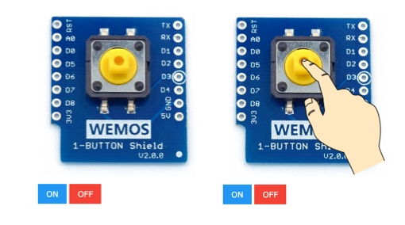
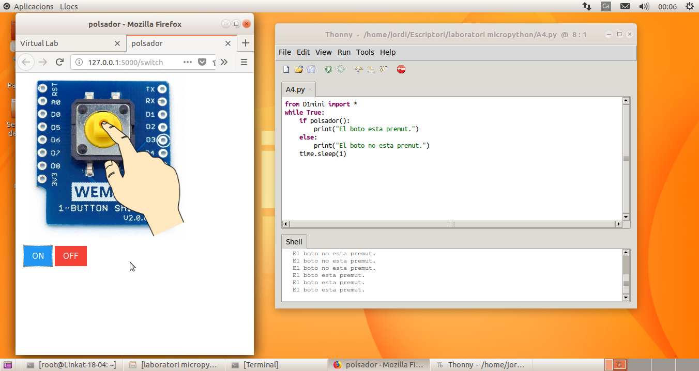

Farem servir el mòdul virtual 1-button: http://localhost:5000/switch
i haureu de carregar l'arxiu A4.py a l'entorn de programació Python
Comproveu el que el mòdul virtual funciona correctament abans de posar-vos a manipular el codi.
Aquest mòdul és molt senzill, es tracta d'un botó que puc tenir dos estats: premut (ON) i no premut (OFF).
Per saber en quin estat està el polsador, farem servir l'ordre polsador() Aquesta ordre tornarà un valor True si el polsador està premut i un valor False si no ho està.
Per prendre decisions en funció de l'estat del polsador farem servir l'estructura if condició: / else:
Aquí teniu una còpia del codi original per si ho perdeu fent proves i ho vulgueu recuperar:
Seguiu els passos que hi ha a l'apartat d'Informació més a dalt per configurar l'entorn de treball.
En aquesta activitat, treballarem amb dos mòduls a l'hora:
Mòdul Buzzer: http://localhost:5000/buzzer
Mòdul 1-Button: http://localhost:5000/switch
El funcionament és el mateix que en les activitats anteriors, només que en aquesta treballareu amb dos mòduls.
Seríeu capaços de fer que la cançó que vau programar en l'Activitat 3 soni només quan el polsador estigui premut?
Un cop que el codi estigui preparat, verificat i faci el que es demana, lliureu l'activitat.